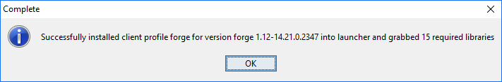

Python in minecraft
One of my daughters is getting into minecraft. I've heard you can do python in minecraft, so I want to give that a go.
All of the examples below are taken wholly or in part from this awesome guide: Python Coding for Minecraft by Alex Pruss
- Get minecraft for PC
Costs $26.95
- Minecraft no longer requires java. So you don't need to update that.
You still technically need Java, but it is now downloaded by the Minecraft launcher and stored with the launcher instead of installed across the entire system. If Minecraft is the only reason you have Java installed, you now have no reason to open up your system to Java vulnerabilities. The Java executable used by Minecraft stays with Minecraft and is as good as invisible and inaccessible to the rest of the system.
- Run minecraft launcher.
- "Launch Options"
- "Add new"
- Name: (e.g.) Test of 1.9
- Version: release 1.9
- "Add new"
On the front screen, on the big green button hit the 'up' arrow to change profile. Select this new profile. And press play.
Make sure it works.
Maybe create a new world, superflat, bonus chest on, cheats on.
- Install Forge.
Default options -- i.e. Client.
It downloads and unpacks a bunch of stuff.

- Install raspberry jam mod
https://github.com/arpruss/raspberryjammod/releases
RaspberryJamMod-Installer.exe
(22.8MB)
Installing that you need to choose Python 2.7 or 3.x ....
I went with 3.x which I may regret later.
I'm socially progressive and tend to get myself into this kind of problem for fun.
Download the latest zip file containing sample Python scripts and the mcpi library from:
Create a new folder: $env:AppData\.minecraft\mcpipy
Unzip the file and places its content into the $env:AppData.minecraft\mcpipy folder.
- Run minecraft launcher...
pick the 'forge' profile by clicking the up arrow on the green button.
8.
Run a python script by:
/py
e.g.
/py helloworld
Hello World!
Here's a helloworld script...
from mine import *
mc = Minecraft()
mc.postToChat("Hello world!")
It outputs the message "Hello world!" to the chat window.
Read parameters from input
say.py:
from mine import *
from sys import argv
mc = Minecraft()
mc.postToChat(argv[1])
To use it:
/py say HELLO
The screen then says:
HELLO
Or if you want a message that includes spaces, you'd use:
/py say "HELLO WORLD"
The technique above is very useful if you want to run a script that lets the user decide on something when the script is run (instead of knowing everything when the script is first written)
Sometimes these are called parameters, sometimes they are called arguments.
Here's an advanced trick... if you want to join all of the parameters together into one:
from mine import *
from sys import argv
mc = Minecraft()
if len(sys.argv) <= 1:
text = "Hello, world!\nWelcome to Minecraft."
else:
del sys.argv[0]
text = " ".join(sys.argv)
mc.postToChat(text)
Teleport to a location
from mine import *
from sys import argv
mc = Minecraft()
mc.player.setTilePos(int(argv[1]), int(argv[2]), int(argv[3]))
To find my location:
/py whereami
returns (currently)
vec3(116,10,9)
Then i can get back there with:
/py teleport 116 10 9
whereami:
from mine import *
from sys import argv
mc = Minecraft()
mc.postToChat(mc.player.getTilePos())
Place a block
from mine import *
mc = Minecraft()
mc.postToChat("Placing a block...")
playerPos = mc.player.getPos()
mc.setBlock(playerPos.x,playerPos.y-1,playerPos.z,block.DIAMOND_ORE)
Place 7 blocks
from mine import *
mc = Minecraft()
mc.postToChat("Placing 7 blocks...")
playerPos = mc.player.getPos()
for i in range(7):
mc.setBlock(playerPos.x + i,playerPos.y-1,playerPos.z,block.DIAMOND_ORE)
Place as many blocks in a row as you want
With blockn.py:
from mine import *
from sys import argv
mc = Minecraft()
mc.postToChat("Placing argv[1] blocks...")
playerPos = mc.player.getPos()
for i in range(int(argv[1])):
mc.setBlock(playerPos.x + i,playerPos.y-1,playerPos.z,block.DIAMOND_ORE)
Usage:
/py blockn 30
Place as many blocks in a row as you want, of a given type
With b.py
from mine import *
from sys import argv
mc = Minecraft()
mc.postToChat("Placing argv[1] blocks of type argv[2]...")
playerPos = mc.player.getPos()
specifiedBlock = Block.byName(argv[2])
for i in range(int(argv[1])):
mc.setBlock(playerPos.x + i,playerPos.y,playerPos.z,specifiedBlock)
Usage:
/py b 30 GLOWSTONE_BLOCK
For a list of all block types in minecraft see blocks in minecraft
Place a rectangle of blocks
from mine import *
mc = Minecraft()
mc.postToChat("Placing a wall...")
playerPos = mc.player.getPos()
for i in range(7):
for j in range(7):
mc.setBlock(playerPos.x + i,playerPos.y-1,playerPos.z+j,block.DIAMOND_ORE)
Place a row of blocks of a random type
import random
from mine import *
from sys import argv
mc = Minecraft()
mc.postToChat("Placing argv[1] RANDOM blocks...")
playerPos = mc.player.getPos()
blocktypes = [
block.STAINED_GLASS_BLACK,
block.STAINED_GLASS_BLUE,
block.STAINED_GLASS_BROWN,
block.STAINED_GLASS_CYAN,
block.STAINED_GLASS_GRAY,
block.STAINED_GLASS_GREEN,
block.STAINED_GLASS_LIGHT_BLUE,
block.STAINED_GLASS_LIGHT_GRAY,
block.STAINED_GLASS_LIME,
block.STAINED_GLASS_MAGENTA,
block.STAINED_GLASS_ORANGE,
block.STAINED_GLASS_PINK,
block.STAINED_GLASS_PURPLE,
block.STAINED_GLASS_RED,
block.STAINED_GLASS_WHITE,
block.STAINED_GLASS_YELLOW,
]
for i in range(int(argv[1])):
mc.setBlock(playerPos.x + i,playerPos.y,playerPos.z,random.choice(blocktypes))
Usage:
/py randomblocks 10
....Places a row of 10 blocks in different stained glass colors.
Make a pyramid
Run python commands in the minecraft console
See console.py